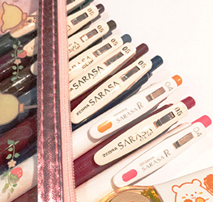
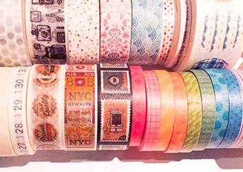
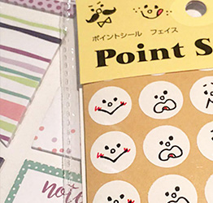
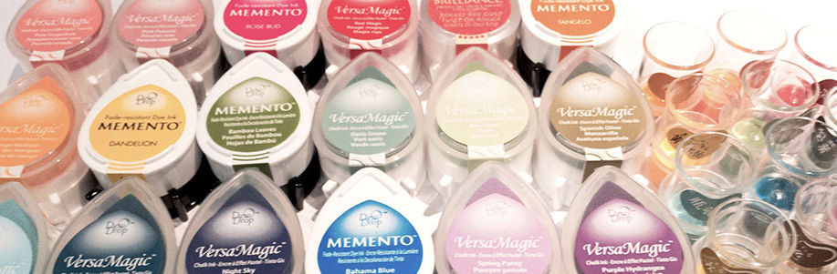

Collection items
Pens
Colorful pens give you more choices to write creatively and you can draw whatever you like on a schedule.
Wahshi Tapes
Washi taps allows you to paste them on wherever you like on a schedule as a decoration. Start to imagine how you can tap them!
Stickers
Stickers are very common to use for decoration and stick them in your own style!
Stamps and Inks
Clear stamps are popolur in recent years because it can be stored in a file that allow you more space to keep them for your own collection compared to traditional wodden stamps. Inks’ choices are various in different brands depending on your uasge and purpose. Paper and ink choice can be challenging if you don’t know how to choose them!